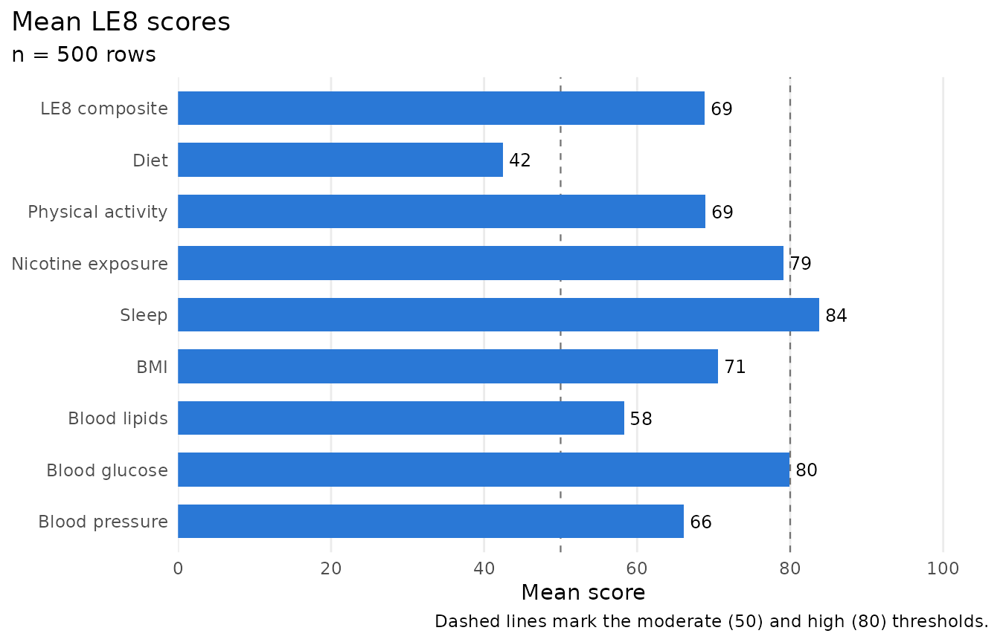
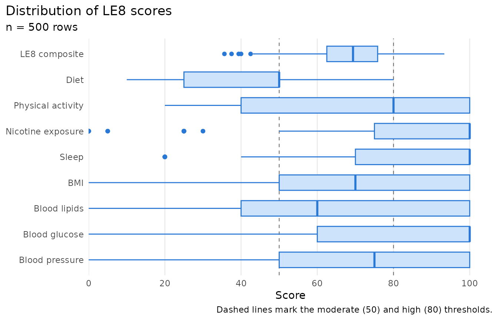
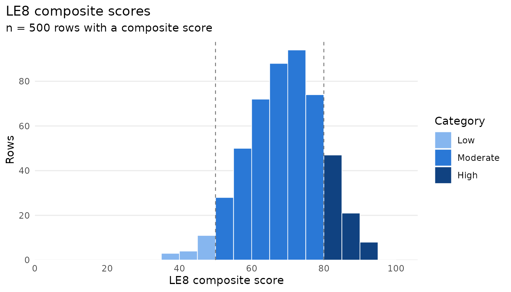
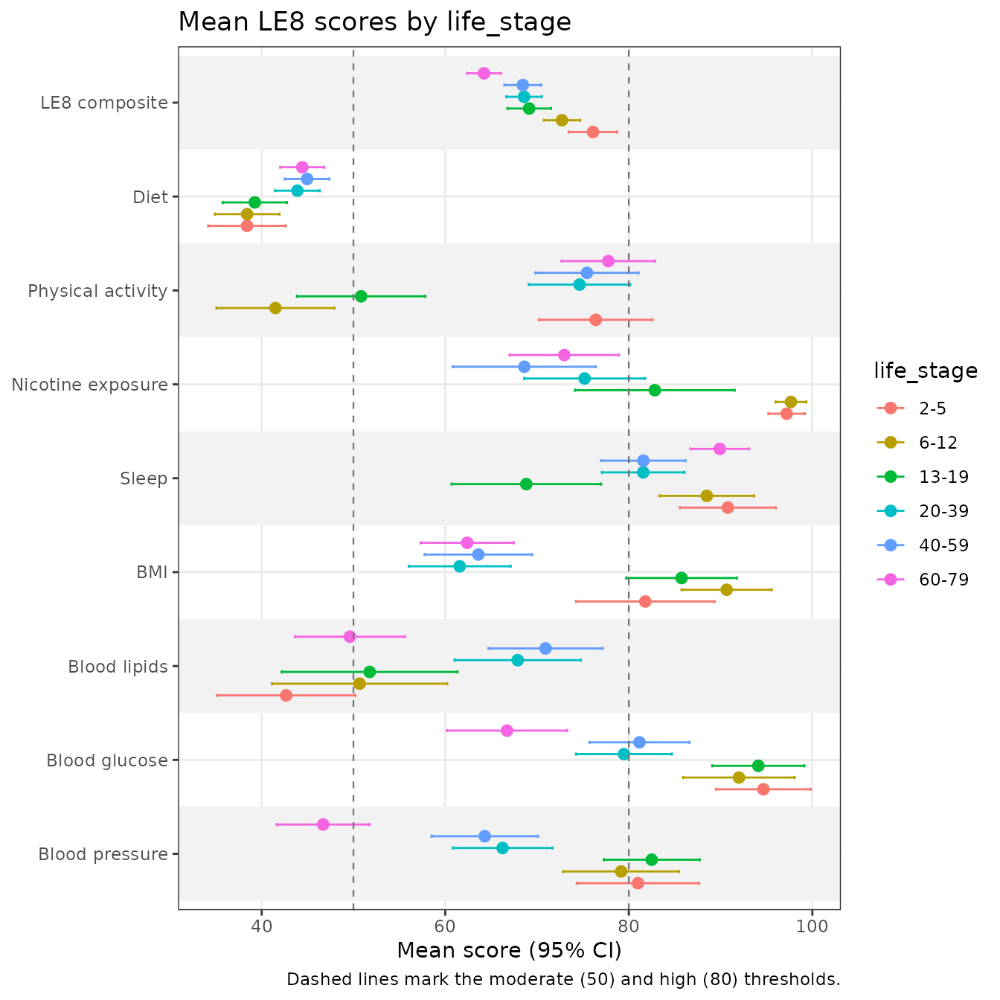
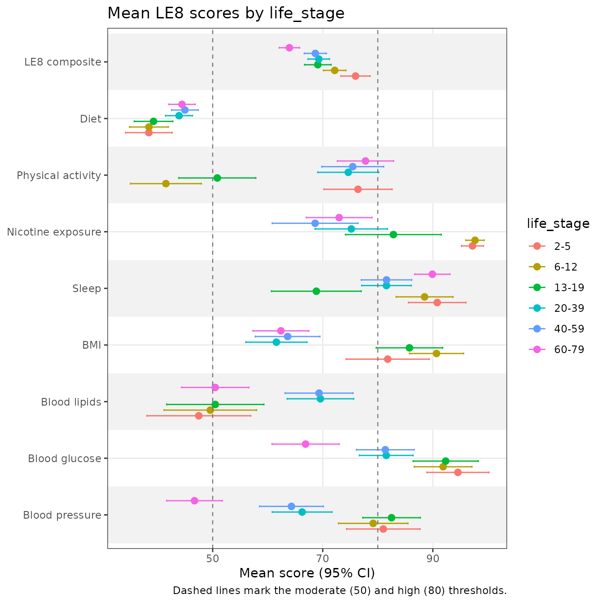

Case study: cardiovascular health across the lifespan
Source:vignettes/case-study.Rmd
case-study.RmdThis article works through a complete project with essential8: preparing survey data for children and adults, scoring Life’s Essential 8 (LE8), checking what was scored, and summarizing and plotting the results for a report. The data are simulated for 500 people aged 2 to 79 years.
The study
Suppose a community health survey collected cardiovascular health measures for 500 household members aged 2 years or older. We are interested in:
- How many participants have enough data for an LE8 composite score?
- What is the distribution of cardiovascular health, overall and by life stage?
- Which LE8 components are weakest (have the lowest scores) at each life stage?
Prepare the data
Each participant needs the inputs for the components that apply at their age. The survey recorded:
- the 16-item MEPA diet questionnaire for everyone (children aged 2-5 use 10 of the items, and their sweets include sugar-sweetened beverages);
- daily active play for children aged 2-5, and weekly moderate and vigorous activity minutes from age 6;
- nicotine exposure, secondhand smoke, and sleep;
- BMI for adults, and the CDC BMI percentile and percent of the 95th percentile for children;
- non-HDL cholesterol and glucose, where blood was drawn;
- blood pressure, with the child’s AAP 2017 90th and 95th percentile thresholds at ages 1-12.
In a real project, the children’s growth-chart and blood-pressure
reference values would come from height, weight, sex, and age with
add_pediatric_references(), which uses the packages
cdcanthro and pedbp:
survey <- add_pediatric_references(
survey,
sex = "sex",
height = "height_cm",
weight = "weight_kg"
)Simulation code
set.seed(2026)
n <- 500
age <- c(
sample(2:5, 50, replace = TRUE),
sample(6:12, 60, replace = TRUE),
sample(13:19, 60, replace = TRUE),
sample(20:79, n - 170, replace = TRUE)
)
child <- age < 20
preschool <- age < 6
under_13 <- age < 13
sex <- sample(c("female", "male"), n, replace = TRUE)
clamp <- function(x, lower = -Inf, upper = Inf) pmin(pmax(x, lower), upper)
diabetes <- !child & runif(n) < plogis(-4.2 + 0.05 * age)
smoking_status <- case_when(
age < 13 ~ "never",
child ~ sample(c("never", "former", "current"), n, TRUE, c(0.8, 0.15, 0.05)),
.default = sample(c("never", "former", "current"), n, TRUE, c(0.58, 0.28, 0.14))
)
bmi_percentile <- if_else(child, round(clamp(rbeta(n, 2.2, 1.2) * 100, 5, 99.9), 1), NA_real_)
adult_bmi <- if_else(child, NA_real_, round(clamp(exp(rnorm(n, log(28), 0.17)), 18.5), 1))
# Heavier participants are more likely to have blood drawn, and their
# cholesterol and glucose run higher: the labs are missing at random given BMI.
weight_z <- if_else(child, (bmi_percentile - 50) / 29, (adult_bmi - 28) / 5)
blood_drawn <- runif(n) < if_else(
child,
plogis(-0.4 + 1.2 * weight_z),
plogis(1.6 + 0.03 * (age - 50) + 0.9 * weight_z)
)
survey <- tibble(
id = sprintf("S%03d", seq_len(n)),
age = age,
sex = sex,
# MEPA: servings per day
olive_oil = rpois(n, 0.8),
green_leafy_vegetables = rpois(n, if_else(child, 0.6, 0.8)),
other_vegetables = rpois(n, 1.2),
whole_grains = rpois(n, 1.6),
# MEPA: servings per week (sweets include sugary drinks under age 6)
berries = rpois(n, 2),
other_fruit = rpois(n, if_else(child, 7, 5)),
meat = rpois(n, 4),
fish = rpois(n, 1.2),
chicken = rpois(n, 2.5),
cheese = rpois(n, 3),
butter_cream = rpois(n, 3),
beans = rpois(n, 1.5),
sweets_and_pastries = rpois(n, if_else(child, 6, 4)),
nuts = rpois(n, 2),
alcohol = if_else(age < 18, 0L, rpois(n, 3)),
fast_food = rpois(n, 1.2),
# Physical activity
active_play_minutes = if_else(preschool,
round(rgamma(n, 6, scale = 25)),
NA_real_),
moderate_activity_minutes =
if_else(preschool,
NA_real_,
round(
rgamma(n, 1.3, scale = if_else(child, 140, 85)))
),
vigorous_activity_minutes =
if_else(preschool,
NA_real_,
round(rbinom(n, 1, 0.5) * rgamma(n, 1.2, scale = if_else(child, 80,
45)))
),
# Nicotine and sleep
smoking_status = smoking_status,
years_since_quit = if_else(!child & smoking_status == "former",
round(runif(n, 0, 25), 1), NA_real_),
current_inhaled_nds = smoking_status != "current" &
age >= 13 & runif(n) < if_else(child, 0.12, 0.05),
secondhand_smoke_home = runif(n) < 0.12,
sleep_hours = round(2 * rnorm(n,
case_when(preschool ~ 11,
under_13 ~ 9.5,
child ~ 7.6, .default = 7), 1)) / 2,
# BMI: adults in kg/m^2, children as CDC percentiles
bmi = adult_bmi,
bmi_profile = if_else(child,
NA_character_,
if_else(runif(n) < 0.1, "asian_pacific", "general")),
bmi_percentile = bmi_percentile,
bmi_percent_of_p95 = if_else(
bmi_percentile >= 95,
round(100 + rexp(n, 1 / 12), 1),
round(clamp(100 - (95 - bmi_percentile) * 0.45, 60, 99.9), 1)
),
# Laboratory values (masked below where no blood was drawn)
non_hdl_cholesterol =
round(
clamp(
rnorm(n,
if_else(child,
112 + 14 * weight_z,
138 + 0.3 * (age - 50) + 12 * weight_z),
if_else(child, 22, 32)), 50)),
lipid_lowering_treatment = !child & runif(n) < plogis(-3.5 + 0.05 * age),
diabetes = diabetes,
glucose_measure = if_else(diabetes, "hba1c", "fasting_glucose"),
glucose_value = case_when(
diabetes ~ round(clamp(rnorm(n, 7.4, 1.1), 6.5), 1),
.default = round(
clamp(rnorm(n, if_else(child, 88, 95) + 5 * weight_z, 10), 65, 125)
)
),
# Blood pressure, with AAP 2017 thresholds for ages 1-12
systolic_bp =
round(
rnorm(n,
if_else(child, 96 + 1.4 * age, 121 + 0.35 * (age - 50)),
if_else(child, 9, 14))),
diastolic_bp = round(
rnorm(n, if_else(child, 56 + 0.9 * age, 77), if_else(child, 7, 9))),
systolic_bp_p90 = if_else(under_13, round(100 + 1.3 * age), NA_real_),
systolic_bp_p95 = if_else(under_13, round(104 + 1.3 * age), NA_real_),
diastolic_bp_p90 = if_else(under_13, round(62 + 0.9 * age), NA_real_),
diastolic_bp_p95 = if_else(under_13, round(66 + 0.9 * age), NA_real_),
antihypertensive_treatment = !child & runif(n) < plogis(-3.8 + 0.055 * age)
)
# Keep the full values to check the imputation against later.
survey_complete <- survey
survey <- survey |>
mutate(
non_hdl_cholesterol = if_else(blood_drawn, non_hdl_cholesterol, NA_real_),
glucose_value = if_else(blood_drawn, glucose_value, NA_real_),
glucose_measure = if_else(
blood_drawn | diabetes, glucose_measure, NA_character_
)
)
survey |>
mutate(child = age < 20) |>
count(child)
#> # A tibble: 2 × 2
#> child n
#> <lgl> <int>
#> 1 FALSE 330
#> 2 TRUE 170The simulation leaves gaps where a real survey would have them: about
a fifth of adults and nearly half of children had no blood drawn, so
they have no lipid or glucose values. Blood was drawn more often for
participants with a higher BMI, whose cholesterol and glucose also run
higher. By default, missing values are not imputed:
score_le8(impute = FALSE). If set to TRUE, the
function uses multiple imputation with predictive mean matching to fill
in missing values.
Choose a composite threshold
min_components sets how many of the eight component
scores a participant needs for a composite score. The default of 7 suits
adults with complete measurements, but AHA recommends averaging whatever
components are available and appropriate for a child, and the NHANES
analysis that accompanied the advisory averaged as few as three. Without
blood results, a participant has six components.
Scoring with the default shows the cost for children:
default_threshold <- score_le8(survey)
default_threshold |>
summarise(
participants = n(),
with_composite = sum(!is.na(le8_composite_score)),
.by = le8_population
)
#> # A tibble: 2 × 3
#> le8_population participants with_composite
#> <chr> <int> <int>
#> 1 pediatric 170 94
#> 2 adult 330 266Only 94 of the 170 children keep a composite score: those without
blood results have six components, one short of the default. This study
uses min_components = 6, so a participant needs every
component except the two laboratory measures.
Compute LE8 scores
scores <- score_le8(survey, diet_method = "mepa", min_components = 6)The result is the survey with the scores appended, and the class
essential8_scores added to the tibble. The component scores
are named after their component, such as diet_score and
blood_pressure_score; n_components counts the
scores that contributed to le8_composite_score.
scores |>
select(id, age, le8_population, ends_with("_score"),
n_components, le8_category) |>
head(5)
#> # A tibble: 5 × 14
#> id age le8_population diet_score physical_activity_score nicotine_score
#> <chr> <int> <chr> <dbl> <dbl> <dbl>
#> 1 S001 2 pediatric 20 70 100
#> 2 S002 2 pediatric 10 90 80
#> 3 S003 2 pediatric 50 70 100
#> 4 S004 3 pediatric 60 50 100
#> 5 S005 2 pediatric 60 80 100
#> # ℹ 8 more variables: sleep_score <dbl>, bmi_score <dbl>,
#> # blood_lipids_score <dbl>, blood_glucose_score <dbl>,
#> # blood_pressure_score <dbl>, le8_composite_score <dbl>, n_components <int>,
#> # le8_category <chr>Add the life stage for the comparisons below:
scores <- scores |>
mutate(
life_stage = cut(
age,
breaks = c(2, 6, 13, 20, 40, 60, 80),
labels = c("2-5", "6-12", "13-19", "20-39", "40-59", "60-79"),
right = FALSE
)
)
scores |>
select(id, life_stage) |>
head(5)
#> # A tibble: 5 × 2
#> id life_stage
#> <chr> <fct>
#> 1 S001 2-5
#> 2 S002 2-5
#> 3 S003 2-5
#> 4 S004 2-5
#> 5 S005 2-5Audit the scores
summary() reports how many participants were scored, the
distribution of each score, and the categories. Check it before any
analysis: the counts show whether missing inputs or the threshold
excluded more people than expected.
summary(scores)
#> LE8 scores: 500 rows (330 adult, 170 pediatric)
#> Diet method: mepa; min_components: 6
#> Composite score available for 500 of 500; all 8 components for 360.
#>
#> n mean sd median IQR range
#> LE8 composite 500 68.8 10.3 69.4 62.5-75.8 35.6-93.3
#> Diet 500 42.5 13.5 50.0 25.0-50.0 10.0-80.0
#> Physical activity 500 68.9 30.2 80.0 40.0-100.0 20.0-100.0
#> Nicotine exposure 500 79.1 33.0 100.0 75.0-100.0 0.0-100.0
#> Sleep 500 83.8 23.4 100.0 70.0-100.0 20.0-100.0
#> BMI 500 70.6 29.3 70.0 50.0-100.0 0.0-100.0
#> Blood lipids 360 58.3 30.4 60.0 40.0-100.0 0.0-100.0
#> Blood glucose 360 79.9 27.3 100.0 60.0-100.0 0.0-100.0
#> Blood pressure 500 66.1 29.6 75.0 50.0-100.0 0.0-100.0
#>
#> Category (rows with a composite score):
#> n percent
#> low 18 3.6%
#> moderate 406 81.2%
#> high 76 15.2%Every participant has a diet, activity, nicotine, sleep, BMI, and blood pressure score; lipid and glucose scores are available only for the 360 participants who had blood drawn. With at least six components each, all 500 participants have a composite score.
Describe cardiovascular health by life stage
dplyr::summarise() without expressions returns the
summary() statistics as a data frame, one row per measure
and group.
by_stage <- summarise(scores, .by = life_stage)
by_stage |>
filter(measure == "composite") |>
arrange(life_stage) |>
select(life_stage, n, mean, sd, median, q25, q75)
#> # A tibble: 6 × 7
#> life_stage n mean sd median q25 q75
#> <fct> <int> <dbl> <dbl> <dbl> <dbl> <dbl>
#> 1 2-5 50 76.1 9.24 76.2 71.1 83.1
#> 2 6-12 60 72.7 7.65 72.5 68.8 78.4
#> 3 13-19 60 69.1 9.17 69.7 64.1 75.2
#> 4 20-39 108 68.6 10.2 68.5 63.0 74.5
#> 5 40-59 101 68.5 10.2 68.1 61.9 76.2
#> 6 60-79 121 64.2 10.3 65 56.7 71.2Summaries with expressions are ordinary dplyr, so category percentages need no extra steps:
scores |>
filter(!is.na(le8_category)) |>
summarise(
n = n(),
low = mean(le8_category == "low") * 100,
moderate = mean(le8_category == "moderate") * 100,
high = mean(le8_category == "high") * 100,
.by = life_stage
) |>
arrange(life_stage)
#> # A tibble: 6 × 5
#> life_stage n low moderate high
#> <fct> <int> <dbl> <dbl> <dbl>
#> 1 2-5 50 2 64 34
#> 2 6-12 60 0 76.7 23.3
#> 3 13-19 60 3.33 88.3 8.33
#> 4 20-39 108 2.78 81.5 15.7
#> 5 40-59 101 2.97 83.2 13.9
#> 6 60-79 121 7.44 85.1 7.44Plot the results
plot() returns ggplot objects. The default shows the
mean composite and component scores for the whole sample, and
type = "distribution" shows their spread:
plot(scores)
plot(scores, type = "distribution")
type = "composite" draws the composite scores as a
histogram filled by category; the bins break at the category cutpoints
of 50 and 80.
plot(scores, type = "composite")
To compare groups, type = "forest" plots the mean of
each score with a 95% confidence interval, using the ggforestplotR
package. by names the grouping column. Other arguments are
passed to ggforestplotR::ggforestplot(), here to shade
alternate rows and widen the spacing between groups:
plot(
scores,
type = "forest",
by = "life_stage",
striped_rows = TRUE,
dodge_width = 0.75
)
Find the weakest component
tidy() reshapes the scores into long format, one row per
participant and measure, which suits questions about components rather
than people. Here, each participant’s lowest-scoring component points to
where improvement would help them most. Scores often tie, so
slice_min() keeps every tied component; a participant can
count toward more than one.
long <- tidy(scores, id_cols = c("id", "life_stage"), composite = FALSE)
long
#> # A tibble: 4,000 × 6
#> row id life_stage le8_population measure score
#> <int> <chr> <fct> <chr> <fct> <dbl>
#> 1 1 S001 2-5 pediatric diet 20
#> 2 1 S001 2-5 pediatric physical_activity 70
#> 3 1 S001 2-5 pediatric nicotine 100
#> 4 1 S001 2-5 pediatric sleep 70
#> 5 1 S001 2-5 pediatric bmi 30
#> 6 1 S001 2-5 pediatric blood_lipids 20
#> 7 1 S001 2-5 pediatric blood_glucose 100
#> 8 1 S001 2-5 pediatric blood_pressure 25
#> 9 2 S002 2-5 pediatric diet 10
#> 10 2 S002 2-5 pediatric physical_activity 90
#> # ℹ 3,990 more rows
stage_sizes <- count(scores, life_stage, name = "stage_n")
weakest <- long |>
filter_out(is.na(score)) |>
slice_min(score, n = 1, by = id) |>
count(life_stage, measure, name = "participants") |>
slice_max(participants, n = 1, by = life_stage) |>
left_join(stage_sizes, by = join_by(life_stage)) |>
mutate(percent = round(100 * participants / stage_n, 1)) |>
select(life_stage, measure, participants, percent) |>
arrange(life_stage)
weakest
#> # A tibble: 7 × 4
#> life_stage measure participants percent
#> <fct> <fct> <int> <dbl>
#> 1 2-5 diet 31 62
#> 2 6-12 physical_activity 33 55
#> 3 13-19 diet 17 28.3
#> 4 13-19 physical_activity 17 28.3
#> 5 20-39 diet 36 33.3
#> 6 40-59 diet 29 28.7
#> 7 60-79 blood_lipids 32 26.4In this simulated survey, diet is the most common weakest component for preschoolers and adults aged 20-59, and physical activity for children aged 6-12. Adolescents are split evenly between diet and physical activity, and at 60-79 blood lipids are the most common weakest component.
Impute the missing laboratory values
Averaging the available components keeps everyone with six or more scores, but it treats each missing component as if it equalled the average of that person’s other scores. Dropping incomplete participants instead keeps only those who had blood drawn, who in this survey are heavier than average. Multiple imputation fills in the missing inputs several times, drawing on everything else known about each participant, and carries the uncertainty about them into every estimate.
le8_imputation_setup() shows what would be imputed. It
imputes an input only for participants whose age uses it, and checks the
observed values first:
le8_imputation_setup(survey)
#> LE8 imputation setup: 500 rows; 412 missing input values to impute in 3 inputs
#>
#> input applies_to missing impute method
#> non_hdl_cholesterol 500 140 140 pmm
#> glucose_measure 500 132 132 logreg
#> glucose_value 500 140 140 pmmscore_le8(impute = ) runs the imputation with mice and
then scores every imputed data set. Predictive mean matching draws each
missing laboratory value from participants with similar BMI, age, and
other measurements, and the setup keeps every imputed glucose value
consistent with the participant’s diabetes status.
le8_imputation_control() sets the number of imputations,
the number of iterations, and a seed. This example uses 10 imputations
to build quickly; a common rule of thumb for final analyses is at least
as many imputations as the percentage of incomplete cases, here about
30.
After imputation, every participant has all eight components, so the
default min_components = 7 applies to everyone:
imputed_scores <- survey |>
score_le8(impute = le8_imputation_control(m = 10, maxit = 10, seed = 2026)) |>
mutate(
life_stage = cut(
age,
breaks = c(2, 6, 13, 20, 40, 60, 80),
labels = c("2-5", "6-12", "13-19", "20-39", "40-59", "60-79"),
right = FALSE
)
)
#> Warning: Number of logged events: 200
summary(imputed_scores)
#> LE8 scores: 500 participants (330 adult, 170 pediatric), pooled over 10 imputations
#> Diet method: mepa; min_components: 7
#> Composite score available for 500 of 500 (average over imputations).
#>
#> n mean 95% CI fmi sd median
#> LE8 composite 500 68.9 68.0-69.7 0.01 10.1 69.4
#> Diet 500 42.5 41.3-43.7 0.00 13.5 50.0
#> Physical activity 500 68.9 66.2-71.6 0.00 30.2 80.0
#> Nicotine exposure 500 79.1 76.2-82.0 0.00 33.0 100.0
#> Sleep 500 83.8 81.8-85.9 0.00 23.4 100.0
#> BMI 500 70.6 68.0-73.2 0.00 29.3 70.0
#> Blood lipids 500 58.0 55.1-60.8 0.13 30.4 60.0
#> Blood glucose 500 81.8 79.3-84.3 0.17 26.1 100.0
#> Blood pressure 500 66.1 63.5-68.7 0.00 29.6 75.0
#> Means pooled with Rubin's rules; fmi = fraction of missing information.
#>
#> Category (rows with a composite score):
#> n percent 95% CI
#> low 17.7 3.5% 1.8-5.2
#> moderate 406.8 81.4% 77.6-85.1
#> high 75.5 15.1% 11.7-18.5mice drops predictors that are redundant in an individual model and
warns about each one; the mids object kept with the scores
lists them in attr(imputed_scores, "mids")$loggedEvents.
Here, diabetes is redundant with the HbA1c measure in the glucose
models. The same object supports mice’s own diagnostics, such as
plot(attr(imputed_scores, "mids")) to check
convergence.
The summary pools each mean across the imputations with Rubin’s
rules. The confidence intervals include the uncertainty from the missing
values, and the fraction of missing information (fmi) shows
how much of it comes from the imputations: about 0.13 for blood lipids
and 0.17 for blood glucose, and close to zero for the components that
were fully observed.
Because the data are simulated, the true laboratory values are known. The three approaches compare with them as follows:
true_scores <- score_le8(survey_complete)
compare <- function(scored, approach) {
scored |>
summarise(.by = le8_population) |>
filter(measure %in% c("composite", "blood_lipids")) |>
transmute(approach, le8_population, measure, n, mean = round(mean, 1))
}
bind_rows(
compare(filter(scores, n_components == 8), "Complete cases"),
compare(scores, "Available components"),
compare(imputed_scores, "Multiple imputation"),
compare(true_scores, "True values")
) |>
arrange(le8_population, measure)
#> # A tibble: 16 × 5
#> approach le8_population measure n mean
#> <chr> <chr> <fct> <dbl> <dbl>
#> 1 Complete cases adult composite 266 66.4
#> 2 Available components adult composite 330 66.9
#> 3 Multiple imputation adult composite 330 67.1
#> 4 True values adult composite 330 67.2
#> 5 Complete cases adult blood_lipids 266 61.7
#> 6 Available components adult blood_lipids 266 61.7
#> 7 Multiple imputation adult blood_lipids 330 62.5
#> 8 True values adult blood_lipids 330 62.4
#> 9 Complete cases pediatric composite 94 71.8
#> 10 Available components pediatric composite 170 72.5
#> 11 Multiple imputation pediatric composite 170 72.2
#> 12 True values pediatric composite 170 72.5
#> 13 Complete cases pediatric blood_lipids 94 48.5
#> 14 Available components pediatric blood_lipids 94 48.5
#> 15 Multiple imputation pediatric blood_lipids 170 49.3
#> 16 True values pediatric blood_lipids 170 50.4Complete cases understate the composite score in both populations because they over-represent participants with a higher BMI. Multiple imputation brings the blood lipid means closer to the true values, using the link between BMI and cholesterol, though it does not remove the bias entirely. Averaging the available components lands near the true composite here too, but it gives no estimate for the missing laboratory components and no way to carry their uncertainty into the results.
The other methods pool too. plot() draws pooled means,
and the forest plot draws Rubin’s-rules confidence intervals:
plot(imputed_scores, type = "forest", by = "life_stage", striped_rows = TRUE)